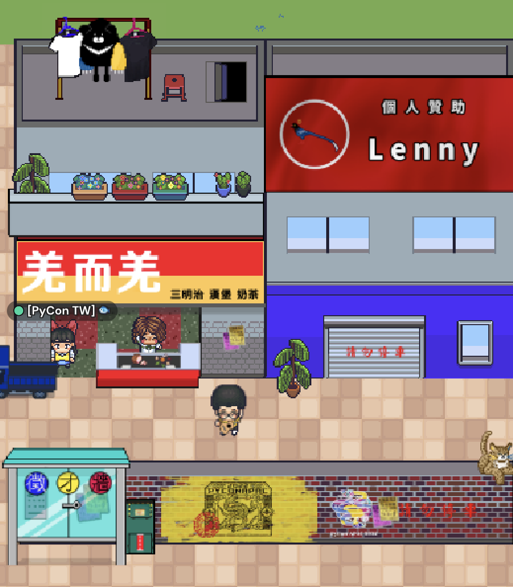
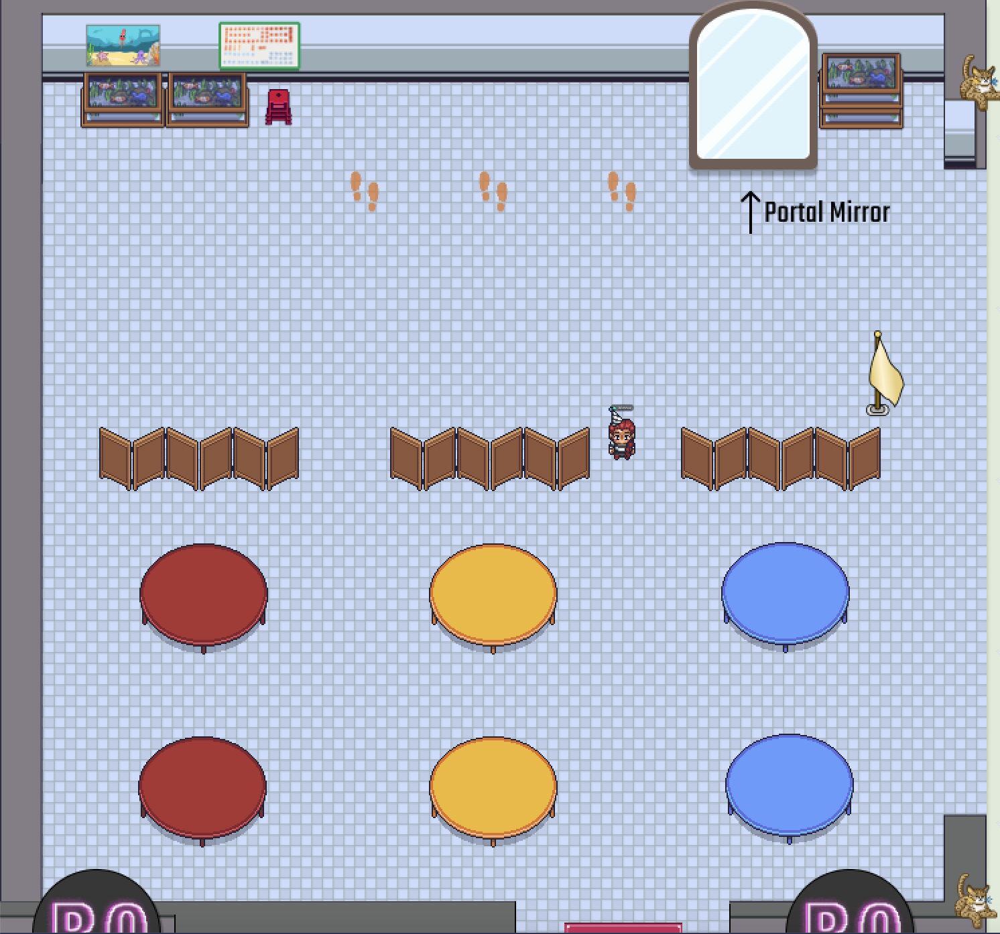

PyCon APAC 2022 on Gather.Town
Posted on Sun 26 March 2023 in online-conference
Introduction

Last year (2022), PyCon Taiwan hosted PyCon APAC for the third time.
Due to global epidemic situation, we chose holding PyCon APAC 2022 remotely via Gather.Town. It’s the second time we used Gather.Town to build the conference. We found that Gather.Town kept updating the interface and features, and created lots of friendly example maps for newcomers.
In this article, we would introduce the events of PyCon APAC 2022 in the following. - written by Winnie -
Overall
Space A & Space B
We tried to introduce Taiwan street view in our main spaces, i.e. Space A & Space B. There is a temple in a rice cooker shape. In Taiwan, there are more than 2,200 temples, which exceeds the number of the convenience stores. - written by Fish -

Rice Cooker Temple

The Cedar Chair
Religious activities flourish in Taiwan. The temples hold shows and roadside banquets on their temple fairs. Hence, we put a big stage in Space A for the keynotes and lightning talks. There are also several red tables in Space B for open spaces. Both are common views on a temple fair.

The Stage in Space A

Red Tables in Space B
We also have common houses and the breakfast stores on the main spaces, which makes the foreign attendees feel like they are in Taiwan.
 
A Breakfast Store & A Plumber Store
PyNight
PyNight is the grand finale of PyCon TW’s first day. In this conventional event, the attendees could feel free to interact with others, accompanied by amazing musical performances and great food. This year, PyNight was hold in the form of BoFs (Birds of feather, flock together), which is a casual gathering for people with same interests. In the PyNight gather.town venue, the BoF spaces are designed in different styles: night camping, cyberpunk bar, concert hall and else. - written by Shirley -


Sprint
The sprints venue consists of the station hall and the cars. When you first enter the venue, you will find yourself in the station hall. The opening and closing ceremonies of the Spring Sprints and the Summer Sprints are also held here. There are entrances to cars surrounding the station hall. The cars have the names of several Taiwanese cities and counties. - written by Fish -

The Station Hall
Each car is in charge of a project, and all developments will take place in their cars. The built-in whiteboard is used to share the project information and progress to the attendees.

The Car

The Usage of the Whiteboard
Design Background
Since PyCon APAC 2022 is hosted by Taiwan this year, the attendees are from all over the world. We hope that attendees from various countries can experience Taiwanese culture through venue layout, story arrangement and interactive games. Therefore, the design of the venue is mainly based on Taiwan elements, including temple culture, local dishes, attractions and Taiwanese daily life, etc. Thanks to Gather Town's customizable venue functions, our various designs can be completed. - written by TN-Lee -
Entrance
Taiwan is a beautiful island, so we tried to make the attendees feel like walking from the sea to the beach. At the spawn point, we have placed some simple operation exchanges, and we want everyone to get started faster. This space has a lot of special animals and objects, which can be interacted with by attendees. Most of them are protected animals in Taiwan! - written by Ray -

Portal
When we left the beach and walked along the forest trail. What catches the eye is the PyCon railroad station, where there are four trains to different destinations. For example, we can take the yellow car to SPACE A. The model of these trains is Ziqiang, which is very representative of Taiwanese trains. Oh, no! The train is about to leave, let's get on the train and head to the venue! - written by Ray -

Stage & Interaction Area
The main stage in the center of Space A is inspired by the scene usually seen beside Taiwanese temples. Conventionally, local people hold performances to worship gods or party-like events at the stage and the square.
In gather.town venue, we hold most of the main events on the stage: Opening/ Closing, Keynotes, Lightning talk and the Job fair. - written by Shirley, Winnie -

We have another main mangling area - Open Space in the center of Space B. It provides a way for attendees to define, organize, and plan out the meetup as they preferred. Briefly, attendees can enjoy the Open Space while making new friends, chat about any topic they’d like at the same time.

Conference room
This year, all talks are pre-recorded and released one week ago to attendees. We created 4 projection booths to let attendees watch the talk videos directly on Gather.Town. We also built 4 speakers’ rooms for each speaker to interact with attendees. - written by Winnie -
Projection Booth

For a better viewing experience and not to create several video objects, we used google slides instead to embed these talk videos into Gather.Town. The attendees can watch the talks directly via the slide objects.


Attendees can choose the preferred one and click to watch the talk.
Speakers' Room
 
After watching talk videos, attendees can walk into the speakers room according to the program schedule. In this area, speakers and attendees can communicate freely and directly. For everyone who got questions, this was the perfect time to approach the speakers.
Sponsor & Community booth
Sponsor booth
This year, we have a lot of sponsors to support us. And also we provide booths for sponsors to interact with attendees. Our booth is an imitation of Taiwan's shopping street so that foreign attendees can also feel the intense atmosphere of Taiwan. - written by Allen -

Community booth
If the attendees want to interact with communities like KIWI PyCon, Taichung.py, MOPCON, PyCon MY, PYCON HK, PYCON JP, and PyCon PH. They can go to the beach. We designed a marketplace called "台味市集" and put lots of booths for each community. - written by Pochun -


Also, we have a podcast show called PyCast, held by volunteers.
We put the episode links at the corners of the space.


Booth Game
Taiwan-travel
This year, we designed a Monopoly as our main space. Working through the path, you can see many icons in the squares. Each icon square has a challenge. Take the challenges to win the prize. - written by Fish -
PyCon APAC 2022 Monopoly
Mystery-space
There are two hidden levels of our booth game, attendees could find the secret entrance to the mystery,and clear the mission to get points. - written by Vivian -

The entrance to the mystery.

Get the drink: buy a papaya milk for the bear.

The multiverse: find the way out of the multiverse by finding the difference of three similar scenes.

Discord
This year, we did not only use discord as our main communication media, but also use it to run our booth game to increase the interactivity. You can find hints on the gather town map and follow the instructions to play the game. The goal is to answer as many questions as you can to acquire higher points. Attendees with more points will have a higher chance to win awards and gifts. There are also hidden missions on gather town and hidden discord commands to be discovered as a little surprise and bonus for attendees.
During the interaction with the discord bot on the discord game server, data will be collected in the background to record the answering status. Also we have set up some initialization steps while attendees join the server. They will be asked several questions and assigned to different groups. Attendees within the same group have a mission: to touch the group flags on gather town. The touch counts of the flags will be used as a bonus points added back to the attendees' points. We hope by introducing this extra game mechanism can further increase the interactivity to the booth game.- written by Yoyo -

Combine booth game with questionnaire collection
We integrated the conference questionnaire into the booth game that we could collect the answers from attendees in game. Attendees will also get the game points by answering the questions in the questionnaire. After 2 days of game play, we reward the Top 10 players in points ranking. Besides, we also designed the prize drawing in the booth game, the host could easily do the lucky draw on discord.
We have open sourced the code of the discord bot, you can find it here and run by your own. - written by Angus -